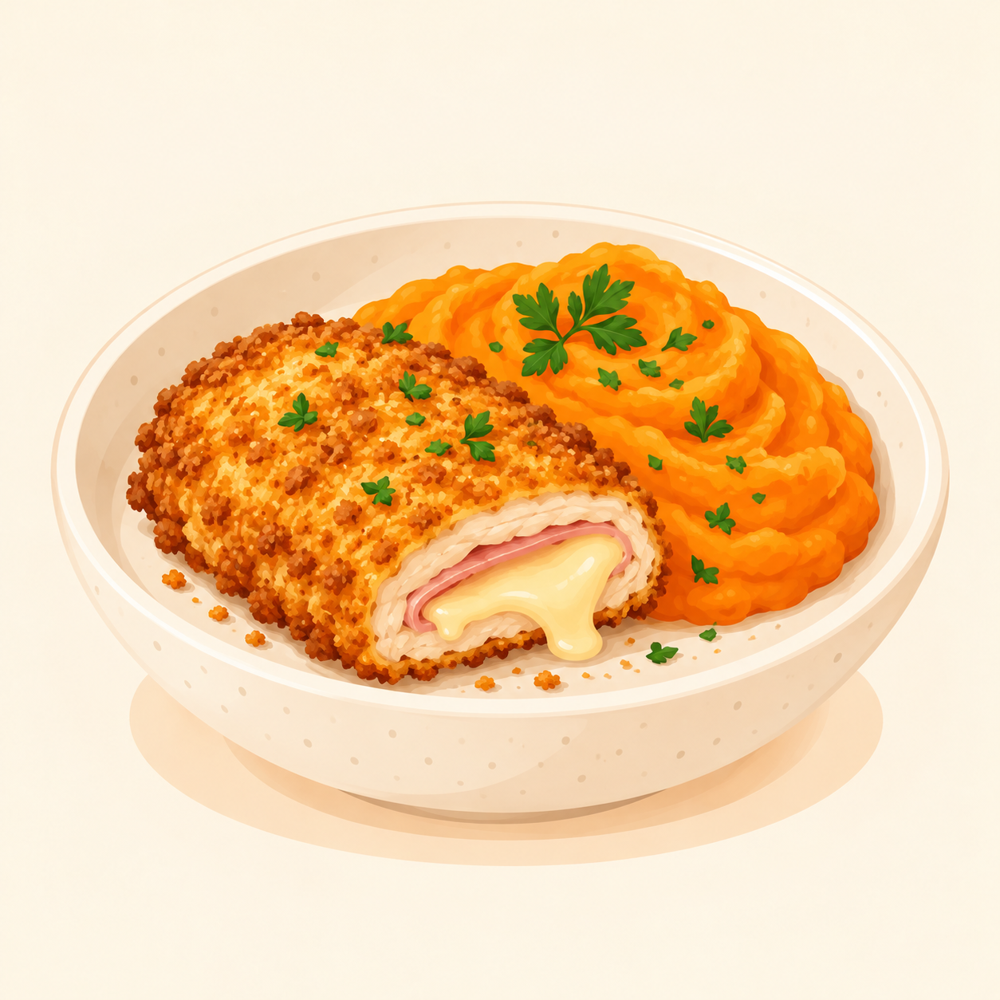

← Alle gerechten
Cordon bleu met wortelpuree
Krokante cordon bleu met zachte puree van aardappel en wortel.

4 personen 35 minuten
Ingrediënten
- 4 cordons bleus
- 800 g bloemige aardappelen
- 500 g wortelen
- 100 ml melk
- 20 g boter
- 1 eetlepel bakolie
- peper, zout en nootmuskaat
Bereiding
- Schil de aardappelen en wortelen en snijd in stukken.
- Kook aardappelen en wortelen 20 minuten in lichtgezouten water tot ze gaar zijn.
- Bak de cordons bleus volgens de instructies op de verpakking tot ze volledig gaar zijn.
- Giet de groenten af en stamp met de boter en melk tot puree. Breng op smaak met peper, zout en nootmuskaat.
- Serveer de cordon bleu met de wortelpuree.